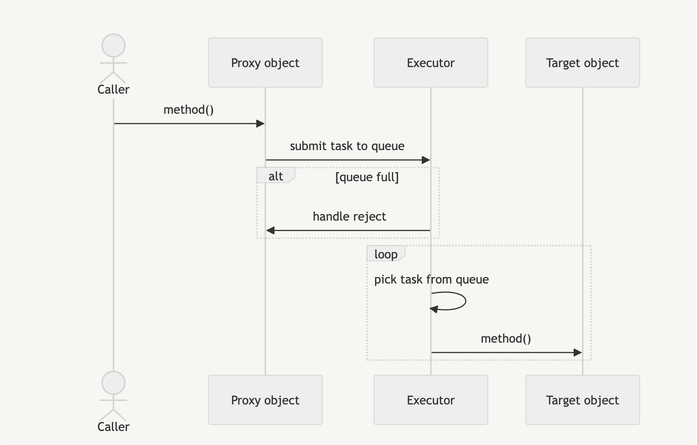
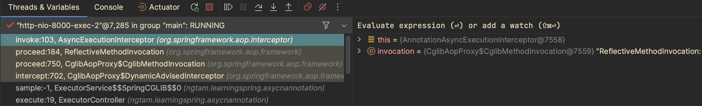

Async annotation in Spring
Spring - framework toi yeu. :")
Khi sử dụng Spring để phát triển các ứng dụng web, annotation là một phần không thể thiếu, từ thuở bắt đầu, Spring sử dụng xml để cấu hình mọi thứ, nhưng rõ ràng cách này rất cồng kềnh và mất thời gian, thời gian trôi qua, mọi thứ đều phát triển, Spring cũng vậy, thay vì sử dụng xml, bạn có thể sử dụng các annotation để cấu hình, lập trình với chương trình của mình. Tuy nhiên, có bao giờ bạn thắc mắc điều gì xảy ra bên dưới những cái annotation đó? Sau khi sử dụng framework 1 thời gian, mình cũng cố gắng tìm hiểu những thứ đó, và nó dẫn tới bài này (và 1 vài bài tiếp theo?). Để hiểu được nguyên lí đằng sau những annotation, bạn cần tìm hiểu về các phần sau:
- Bean life cycle
- Spring AOP
- Dynamic proxy
—-----
Trong bài này, mình sẽ viết về annotation Async.
Annotation này cho phép bạn thực hiện lời gọi hàm bất đồng bộ, hàm được gọi sẽ được thực thi trong một thread khác và hàm gọi không cần chờ hàm được gọi thực thi xong để tiếp tục hay kết thúc, điều này giúp bạn tối ưu performance khi có những công việc tốn thời gian mà không cần thực thi theo thứ tự, một trường hợp thường gặp đó là việc gửi thông báo cho người dùng.
Để dùng annotation này, bạn chỉ cần sử dụng:
@EnableAsync@Async- Thread pool executor
@Service
@Slf4j
@EnableAsync
public class ExecutorService {
@Async("asyncExecutor")
public void sample() {
log.info("hello :))");
}
}
@Configuration
@Slf4j
@RequiredArgsConstructor
public class ExecutorThreadPool {
private final ThreadPoolProperties properties;
@Bean(name = "asyncExecutor")
public Executor asyncExecutor() throws InterruptedException {
ThreadPoolTaskExecutor taskExecutor = new ThreadPoolTaskExecutor();
taskExecutor.setCorePoolSize(properties.getCoreSize());
taskExecutor.setMaxPoolSize(properties.getMaxSize());
taskExecutor.setQueueCapacity(properties.getQueueSize());
taskExecutor.setThreadNamePrefix(properties.getPrefixName());
taskExecutor.setPrestartAllCoreThreads(properties.isPreStart());
taskExecutor.setRejectedExecutionHandler(properties.getPolicy().getHandler());
taskExecutor.setBeanName("asyncExecutor");
taskExecutor.initialize();
log.info("Initialize ThreadPoolTaskExecutor: {}", properties);
printStats(taskExecutor);
return taskExecutor;
}
}
Về lí thuyết, bạn có thể không cần sử dụng thread pool executor vì Spring sẽ tự động quản lý, nhưng trong thực tế, chúng ta nên cấu hình một thread pool tuỳ thuộc vào nhu cầu và cấu hình của server, việc này sẽ mang lại nhiều lợi ích:
- quản lý được tài nguyên được sử dụng
- chỉ định prefix tên thread, dễ dàng trace log
- chỉ định được queue size
- chỉ định cách executor xử lý khi số job vượt quá những thông số đã được cấu hình
Tiếp theo, làm thế nào Spring xử lý được annotation @Async?
Câu trả lời nằm ở dynamic proxy.

Flow hoạt động:
object callergiữ không phải làtarget objectmà làproxy object, điều này được hiện thực khi Spring khởi tạo chương trìnhproxy objectcó hàmmethodgiống vớitarget object, trong hàm này nó hiện thực thêm logic submit task vào queue, task này sẽ chứa logic gọi hàmmethodcủatarget objectexecutorsẽ chịu trách nhiệm lấy task từ queue và thực thi
Vẫn chưa rõ ràng lắm, vậy proxy object ở đâu ra mà nó được inject vào caller object?
Câu trả lời nằm ở lúc Spring khởi tạo bean, Spring chia quá trình khởi tạo ra nhiều giai đoạn:
- Instantiation
- Populating Properties
- Pre-Initialization
- AfterPropertiesSet
- Custom Initialization
- Post-Initialization
Ở giai đoạn Post-Initialization, Spring sẽ xác định bean có cần được bọc lại
bởi object proxy hay không? Đây là đoạn code:
AbstractAdvisingBeanPostProcessor#postProcessAfterInitialization
public Object postProcessAfterInitialization(Object bean, String beanName) {
if (this.advisor == null || bean instanceof AopInfrastructureBean) {
// Ignore AOP infrastructure such as scoped proxies.
return bean;
}
if (bean instanceof Advised advised) {
if (!advised.isFrozen() && isEligible(AopUtils.getTargetClass(bean))) {
// Add our local Advisor to the existing proxy's Advisor chain.
if (this.beforeExistingAdvisors) {
advised.addAdvisor(0, this.advisor);
}
// omitted for briefly....
return bean;
}
}
if (isEligible(bean, beanName)) {
ProxyFactory proxyFactory = prepareProxyFactory(bean, beanName);
proxyFactory.addAdvisor(this.advisor);
customizeProxyFactory(proxyFactory);
// omitted for briefly....
return proxyFactory.getProxy(classLoader);
}
// No proxy needed.
return bean;
}
Trong trường hợp object proxy được tạo, chú ý cách mà Spring khởi tạo proxy factory,
framework thêm advisor vào proxy factory trước khi tạo ra object proxy
bằng câu lệnh proxyFactory.getProxy(classLoader).
Advisor trong trường hợp của @Async annotation là AsyncAnnotationAdvisor,
dưới đây là đoạn code khởi tạo advisor:
public AsyncAnnotationAdvisor(@Nullable Supplier<Executor> executor,
@Nullable Supplier<AsyncUncaughtExceptionHandler> exceptionHandler) {
Set<Class<? extends Annotation>> asyncAnnotationTypes = new LinkedHashSet<>(2);
asyncAnnotationTypes.add(Async.class);
ClassLoader classLoader = AsyncAnnotationAdvisor.class.getClassLoader();
try {
asyncAnnotationTypes.add((Class<? extends Annotation>)
ClassUtils.forName("jakarta.ejb.Asynchronous", classLoader));
}
catch (ClassNotFoundException ex) {
// If EJB API not present, simply ignore.
}
try {
asyncAnnotationTypes.add((Class<? extends Annotation>)
ClassUtils.forName("jakarta.enterprise.concurrent.Asynchronous", classLoader));
}
catch (ClassNotFoundException ex) {
// If Jakarta Concurrent API not present, simply ignore.
}
this.advice = buildAdvice(executor, exceptionHandler);
this.pointcut = buildPointcut(asyncAnnotationTypes);
}
protected Advice buildAdvice(@Nullable Supplier<Executor> executor,
@Nullable Supplier<AsyncUncaughtExceptionHandler> exceptionHandler) {
AnnotationAsyncExecutionInterceptor interceptor = new AnnotationAsyncExecutionInterceptor(null);
interceptor.configure(executor, exceptionHandler);
return interceptor;
}
Advice được sử dụng là AnnotationAsyncExecutionInterceptor, vậy đến đây,
bạn có thể đoán rằng khi gọi hàm được đánh annotation @Async của target object,
một hàm trong class AnnotationAsyncExecutionInterceptor hoặc
parent class của nó sẽ được gọi. Để xác thực, mình dùng Intellij để debug:

khi mình gọi hàm sample, các bạn thấy nó nằm trong object proxy $$SpringCGLIB$$0,
và cuối cùng đến hàm invoke của class AsyncExecutionInterceptor,
class này là parent của class AnnotationAsyncExecutionInterceptor
như mình đề cập ở trên.
public Object invoke(final MethodInvocation invocation) throws Throwable {
Class<?> targetClass = (invocation.getThis() != null ? AopUtils.getTargetClass(invocation.getThis()) : null);
Method specificMethod = ClassUtils.getMostSpecificMethod(invocation.getMethod(), targetClass);
final Method userDeclaredMethod = BridgeMethodResolver.findBridgedMethod(specificMethod);
AsyncTaskExecutor executor = determineAsyncExecutor(userDeclaredMethod);
if (executor == null) {
throw new IllegalStateException(
"No executor specified and no default executor set on AsyncExecutionInterceptor either");
}
Callable<Object> task = () -> {
try {
Object result = invocation.proceed();
if (result instanceof Future<?> future) {
return future.get();
}
}
catch (ExecutionException ex) {
handleError(ex.getCause(), userDeclaredMethod, invocation.getArguments());
}
catch (Throwable ex) {
handleError(ex, userDeclaredMethod, invocation.getArguments());
}
return null;
};
return doSubmit(task, executor, invocation.getMethod().getReturnType());
}
ở hàm invoke, Spring wrap đoạn code gọi hàm invocation.proceed() lại
và submit vào executor để nó thực thi bất đồng bộ, lưu ý invocation.proceed()
có thể là target method,
hoặc một method invoke khác trong chain bởi vì chúng ta có thể áp dụng
nhiều aspect cho cùng một method.
Cuối cùng, mình chạy chương trình và monitor thread pool executor để xem thống kê:
2024-04-30T14:14:23.958+07:00 INFO [,,] 60157 --- [pool-1-thread-1] n.l.asycnannotation.ExecutorThreadPool : Pool Size: 2
2024-04-30T14:14:23.961+07:00 INFO [,,] 60157 --- [pool-1-thread-1] n.l.asycnannotation.ExecutorThreadPool : Active Threads: 0
2024-04-30T14:14:23.961+07:00 INFO [,,] 60157 --- [pool-1-thread-1] n.l.asycnannotation.ExecutorThreadPool : Number of Tasks Completed: 24
2024-04-30T14:14:23.961+07:00 INFO [,,] 60157 --- [pool-1-thread-1] n.l.asycnannotation.ExecutorThreadPool : Number of Tasks in Queue: 0
Qua bài viết này mình đã phân tích cách Spring khởi tạo cũng như hiện thực annotation @Async,
để có thể hiểu rõ và ứng dụng tương tự vào các annotation khác của Spring,
bạn có thể sẽ phải nghiên cứu kĩ hơn các phần mình đề cập ở đầu bài viết.
Bạn có thể tham khảo source code ở đây: https://github.com/dntam00/learning-spring/tree/master/asycn-annotation
Cảm ơn bạn đã đọc đến đây, hẹn gặp lại vào bài viết tiếp theo.